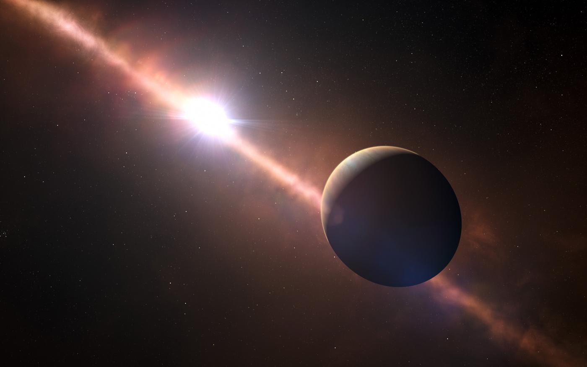

Alexander Wallace
Hi, I'm Alex. I'm a postdoctoral researcher at the Monash University in Melbourne, Australia. I use the Gaia space telescope to study stellar companions such as planets, brown dwarfs and black holes through astrometry.